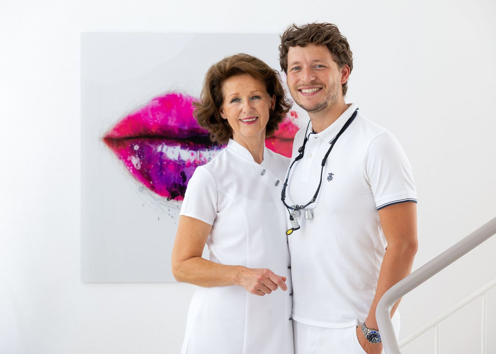
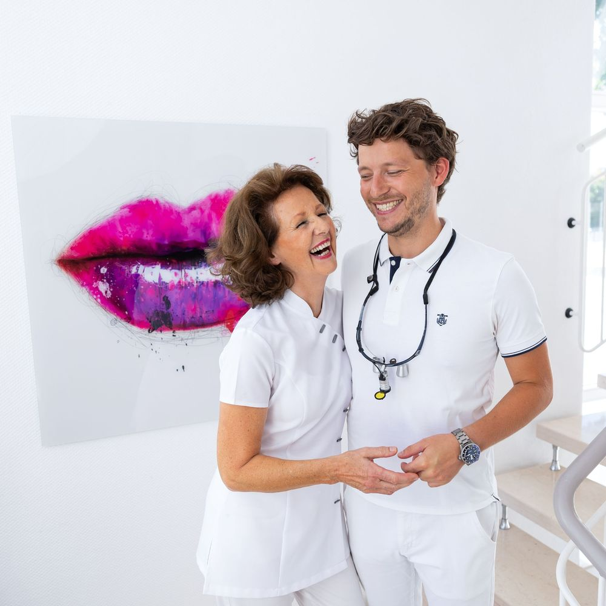
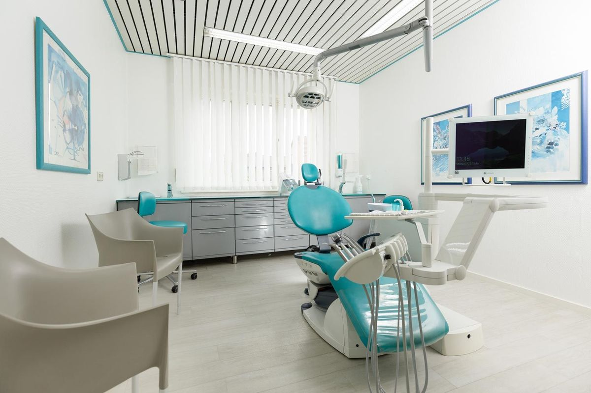
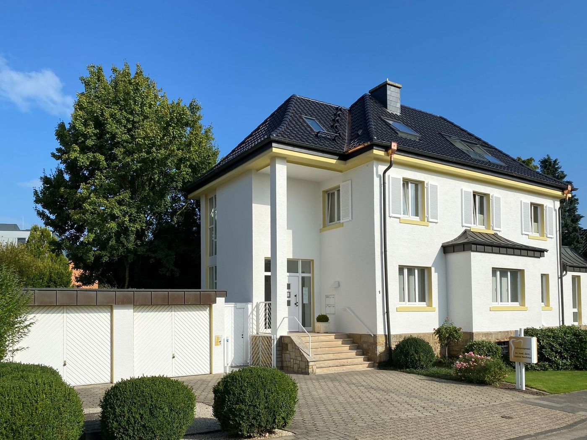
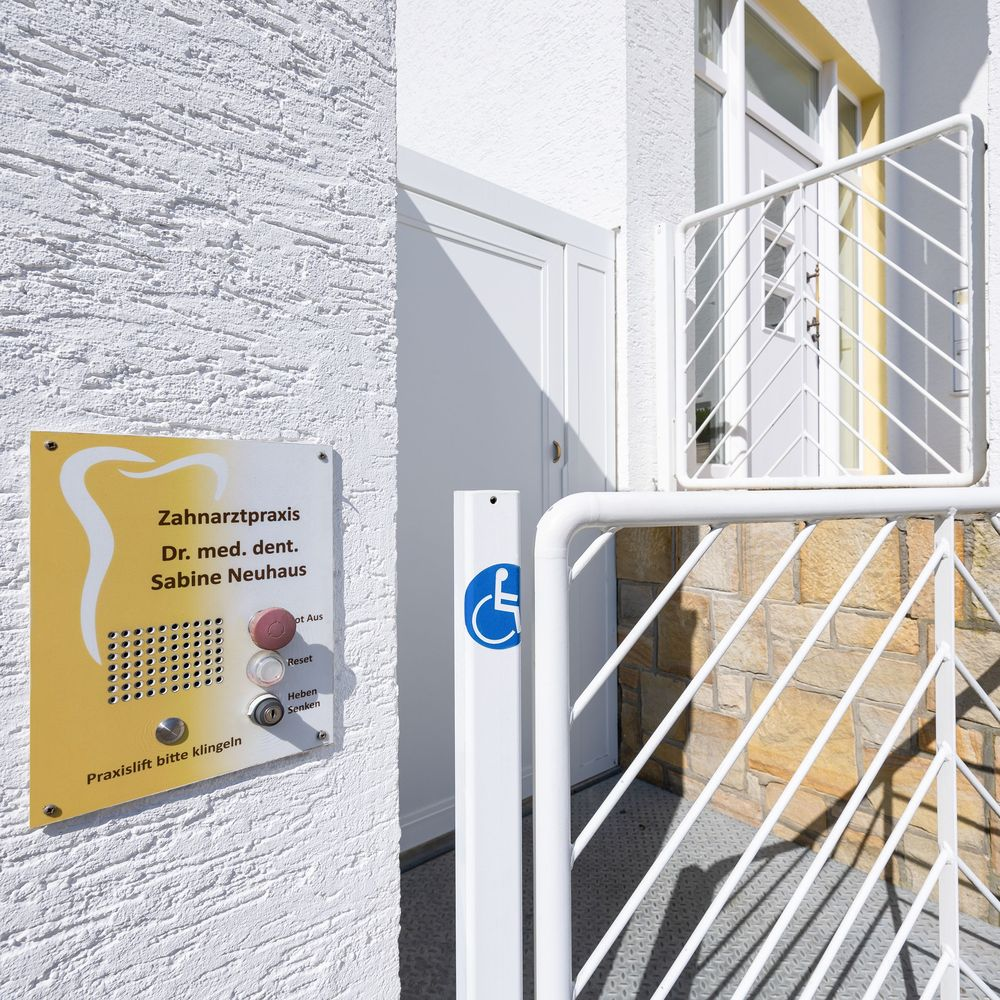
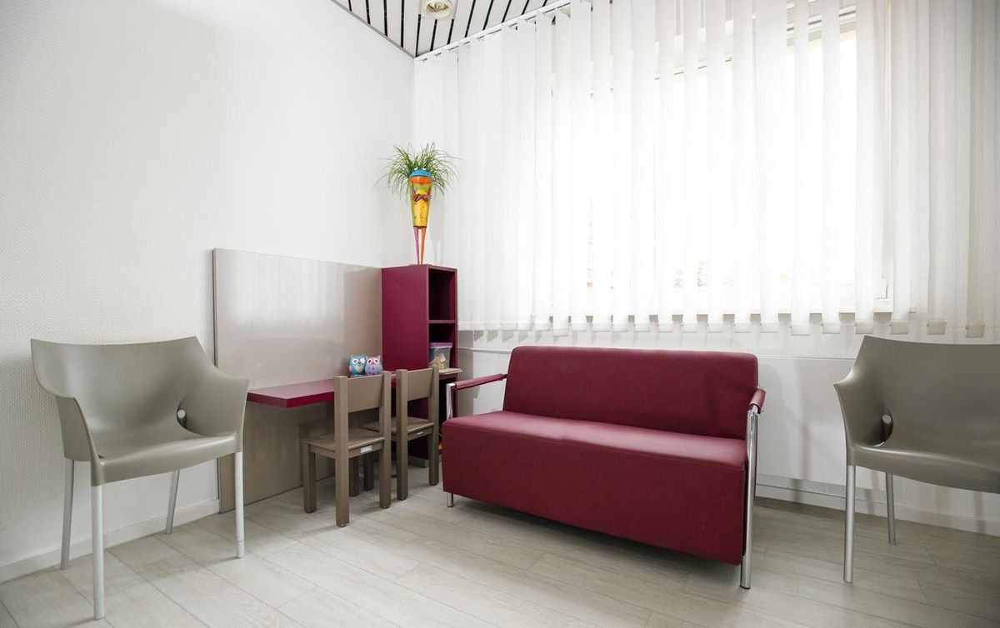

Ihre Familienpraxis am Drostenesch.
Zwei Generationen Zahnmedizin in Borghorst: für Kinder, Eltern und Großeltern. Seit über 40 Jahren für Sie da.
Sprechzeiten: Mo bis Fr ab 8.30 Uhr
Was möchten Sie tun?
- 01Termin anfragenKontrolle, Zahnreinigung, Beratung. Die Praxis ruft Sie zurück.
- 02ZahnschmerzenWährend der Sprechzeiten anrufen, sonst hilft der Notdienst.
- 03Zahnersatz planenWas die Kasse zahlt und was sich am 1. Januar 2027 ändert.
- 04Bei uns arbeitenZFA in Voll- oder Teilzeit und Ausbildung. Bewerbung in zwei Minuten.
Zahnersatz: Was die Kasse zahlt und was sich 2027 ändert
Für Kronen, Brücken und Prothesen zahlt die gesetzliche Krankenkasse einen Festzuschuss. Wie hoch er ist, hängt von Ihrem Bonusheft ab. Zum 1. Januar 2027 sinken alle Stufen um zehn Prozentpunkte.
Entscheidend ist, wann die Krankenkasse Ihren Heil- und Kostenplan bewilligt. Planen Sie ohnehin Zahnersatz, sprechen Sie uns gern früh darauf an.
Zahnersatz in unserer Praxis
- Kronen und festsitzende Brücken
- Grazile Prothetik, auch auf Implantaten
- Metallfreie Versorgungen und Inlays aus Keramik oder Gold
- Zahnersatz „Made in Germany“
Wir beraten Sie und erarbeiten unverbindlich ein Behandlungskonzept, das zu Ihnen passt.
Beratung zu Zahnersatz anfragenIhr Festzuschuss mit Bonusheft
Prozent der Kosten der Regelversorgung, also der Standardlösung für Ihren Befund. Was darüber hinausgeht, zahlen Sie selbst oder Ihre Zusatzversicherung. Bei geringem Einkommen gilt die Härtefallregelung: Die Kasse zahlt die Regelversorgung weiterhin ganz.
Tipp: Bringen Sie Ihr Bonusheft zu jeder Kontrolle mit. Wir tragen den Stempel ein.
Stand 8. November 2026. Grundlage: GKV-Beitragssatzstabilisierungsgesetz, in Kraft seit 30. Juli 2026; berichtet von zm-online (Bundeszahnärztekammer) und KZBV.
Für jedes Alter
Besonders im Fokus stehen bei uns die Vorsorge für Kinder und Erwachsene, die Erhaltung Ihrer eigenen Zähne und fest verankerter Zahnersatz.
- Kinder
Der erste Besuch
Ein Prophylaxeprogramm, das auf Kinder zugeschnitten ist.
- Schwangerschaft
Vorsorge für zwei
Beratung für Ihre Zähne und Tipps für die Zähne Ihres Kindes.
- Erwachsene
Vorsorge
Professionelle Zahnreinigung und Behandlung des Zahnfleischs.
- Erwachsene
Zähne erhalten
Zahnfarbene Füllungen, Inlays, Veneers und Wurzelbehandlung.
- Bei Verspannung
Knirscherschiene
Nach einer Funktionsanalyse genau für Sie angefertigt.
- Im Alter
Gut erreichbar
Ein Personenlift bringt Sie auch mit Rollstuhl oder Rollator in die Praxis.

Eine Familie, eine Praxis
„Erfahrung trifft auf Innovation.“
Seit über 40 Jahren ist die Praxis am Drostenesch für ihre Patientinnen und Patienten da. Als Mehrgenerationen-Praxis wächst das Team aus der Familie heraus. So bleibt die Praxis auch in Zukunft für Ihre Zahngesundheit da.
- Dr. med. dent. Sabine NeuhausZahnärztin, Inhaberin der Praxis
- Dr. med. dent. Julian NeuhausZahnarzt
- Bald zu drittEin weiterer Zahnarzt aus der Familie verstärkt das Team. Vorstellung folgt.

Angst vor dem Zahnarzt? Das ist keine Seltenheit.
Der wichtigste Schritt ist Vertrauen: ein verständnisvolles Team, das Sie einzeln betreut und Ihnen jeden Schritt erklärt. Deshalb nehmen wir uns Zeit für Sie. Sagen Sie es uns einfach bei der Terminanfrage.
Erst einmal kennenlernen4,9 von 5 Sternen
aus 28 Bewertungen bei Google
Bewertungen ansehen
Spaß bei der Arbeit? Komm in unser Team.
Zur Verstärkung unseres freundlichen und engagierten Praxisteams suchen wir ab sofort:
- Zahnmedizinische Fachangestellte (ZFA) (m/w/d)in Vollzeit oder Teilzeit
- Ausbildung zur/zum ZFA (m/w/d)Start nach Absprache

Sprechzeiten und Anfahrt
| Montag | 8.30–12.30 und 14.00–18.00 Uhr |
|---|---|
| Dienstag | 8.30–12.30 und 14.00–18.00 Uhr |
| Mittwoch | 8.30–12.30 Uhr |
| Donnerstag | 8.30–12.30 und 14.00–18.00 Uhr |
| Freitag | 8.30–14.00 Uhr |
Urlaub und Vertretung stehen hier, sobald sie feststehen.
Schmerzen außerhalb der Sprechzeiten
Zahnärztlicher Notdienst Westfalen-Lippe, nennt Ihnen die diensthabende Praxis:
01805 98 67 0014 Cent pro Minute aus dem Festnetz, mobil teurer. Oder online: Notdienstsuche der Zahnärztekammer.
Bei starker Schwellung mit Fieber oder Atemnot: Notruf 112.
Am Drostenesch 1, 48565 Steinfurt-Borghorst
Die Praxis liegt in einem weißen Haus nahe dem Gymnasium Borghorst. Ein Personenlift bringt Sie auch mit Rollstuhl oder Rollator nach oben. Route planen



Danke, Ihre Anfrage ist da.
In der fertigen Website käme Ihre Anfrage jetzt verschlüsselt am Empfang an. Die Praxis ruft Sie zurück oder schreibt Ihnen und bestätigt den Termin.
Entwurf: Es wurde nichts versendet.